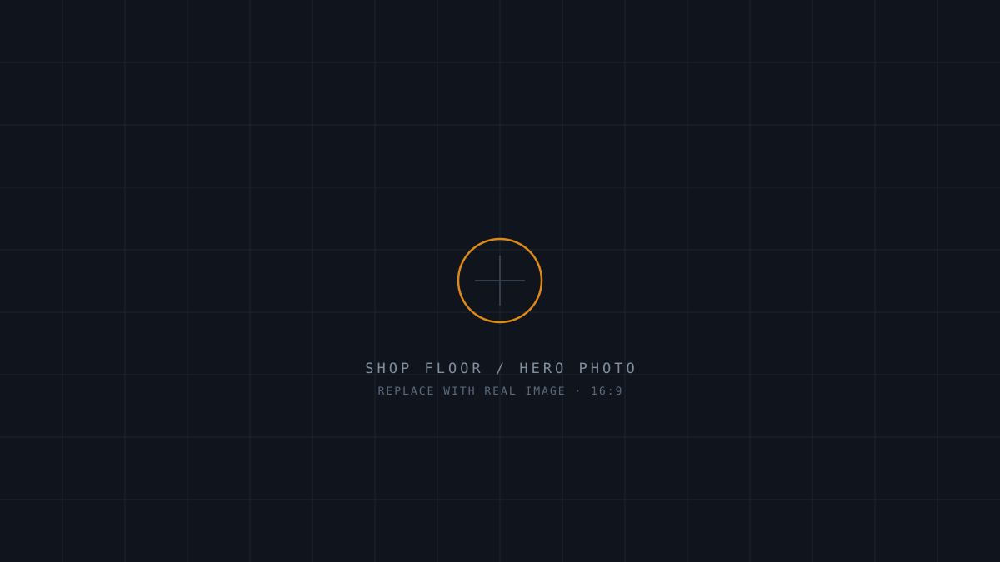

PHOTO DIRECTION
Real machine + shop-floor photography. Cool, neutral white-balance; metal and amber hazard tones welcome. Tight crops on spindles, tooling, finished parts. These blueprint-grid SVGs are placeholders — replace with real images.